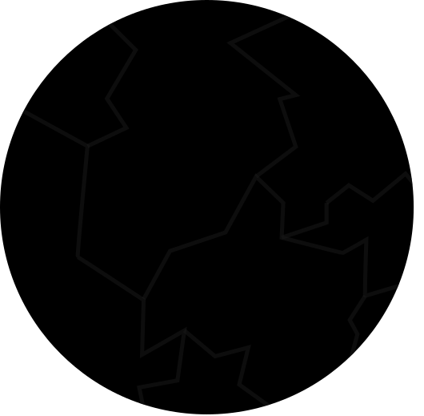

Eu'Nyhl is the sixth and outermost planet of Ae'Uuvoria, and the world of Darkness.
It is made of carbon-rich, dark silicate rock and reflects almost no light. For most of its orbit it is nearly invisible.
To the peoples of Oa'Veyra today, Eu'Nyhl is pure myth. The ancients, though, knew it well and documented it in detail.
No moons and no life are known.
Eu'Nyhl's orbit is stretched into a long oval. At its closest it comes within about 200 AU of the star. At its farthest it drifts out to about 868 AU. One trip around takes roughly 5,000 years.
When it swings in close, the star's heat gives it a comet's tail. That is the only time it has any real chance of being seen from Oa'Veyra.